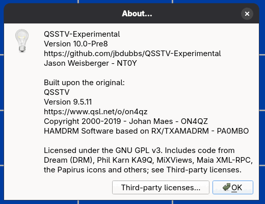

Help menu, updates and desktop integration
- About QSSTV-Experimental
- Shows the version, credits and license. The Third-party licenses... button lists the licenses of the code and libraries that are included.
- About Qt
- The standard Qt information box.
- Users Guide
- Opens this guide in your web browser. If a Documentation URL is set in Configuration > Directories, that address is opened instead.

Updates
The program can tell you when a newer release is available.
AppImage
Help > Check for updates... uses appimageupdatetool when it is installed to download a delta update and replace the AppImage
(restart the program afterwards). If it cannot check, you are offered the releases page in your browser. The AppImage can also be updated with external tools such as
AppImageLauncher or Gear Lever, which read update information embedded in the file.
Other builds (for example Windows)
Help > Check for updates... asks GitHub for the latest release and, if there is a newer one, offers to open the download page. The check box Check for updates at startup does that automatically each time the program starts; a few seconds after the first start the program asks whether you want it. When an update is announced you can choose not to be reminded about that version again.
Updates are never installed without your say-so.
Desktop integration (AppImage)
The AppImage is a single file and does not install itself. About four seconds after the first start the program offers to add QSSTV-Experimental to your application
menu, which copies a menu entry and icons into your home directory (under ~/.local/share). You can say no and tick Don't ask again.
Later, Help > Desktop integration... adds the entry (or, if it is already there, offers to remove it). The same can be done from a terminal with
--install and --uninstall. If you move the AppImage, the menu entry is re-pointed to the new place automatically the next time you run it. The same happens when you replace the AppImage with a newer release: run the new file and the entry follows it.
Help > Desktop integration... and --uninstall remove the entry, icons and metadata made by any release, so you can always clean up from the newest AppImage.
If the entry points at a different AppImage than the one you are running, the dialog says so and offers to use this one or remove it.
If the menu entry has been installed by another tool such as AppImageLauncher, the program leaves it alone.
These entries are shown only when running as an AppImage. In other builds the Help menu has the update entries described above instead.